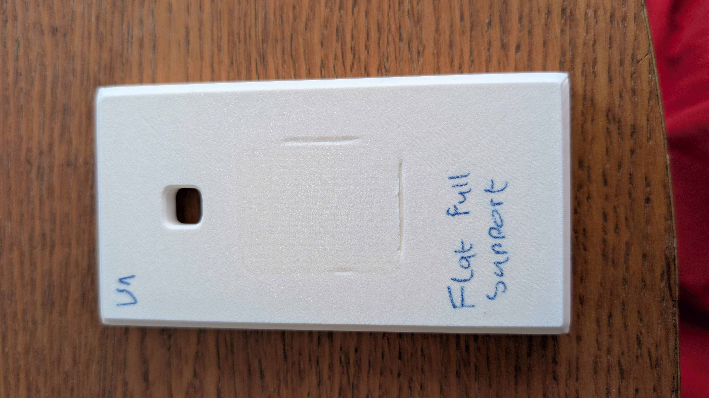

The Inflexibility
of Tradition.
Technical logs and industrial scaling data for the PhonesRus hybrid manufacturing framework.
1. The Injection Moulding Bottleneck
An imaginary phone manufacturer (phonesRus) has approached us to produce the top and bottom casings for their mobile devices. Typically the main manufacturing method for the production of mobile phone casings is injection moulding and with good reason. Injection moulding has significant benefits such as high repeatability and high speed manufacturing however the potential disadvantages can be devastating.
Adhesives Technologies (Henkel) is a company that develops bonding chemicals that act as alternatives to bolts and welds and their case offers some insight into what can happen when injection moulding goes wrong. To achieve the strong bonding properties of their chemicals, highly reactive additives are required and in this case, the additives became overly corrosive when heated up to the moulding temperature. The additives began ‘consuming’ the tooling effectively altering the precision of the mould resulting in incompatible components. Furthermore, the multiple heat cycles further propagated the damage causing the tooling faces of each half to shift. To make matters worse, the pressure release valves were insufficient because the additives produced more vapour than could be released, literally burning the mould. The impact of this damage meant that the tools needed to be rebuilt which resulted in a delay where what used to be a 12 week lead time became a 24 week delay.
Incorporating industry 4.0 technologies such as additive manufacturing and digital twins can help to stretch the possibilities rendered impossible by the rigidity of injection moulding. Industry 4.0 can be defined as the intelligent networking of processes and machinery in industry using data (Lasi et al., 2014). A major attribute of industry 4.0 is that it provides a shift from centralised manufacturing to de-centralised manufacturing, contributing potential solutions to setbacks such as the one mentioned above. Merit3D used photopolymer carbon DLS (digital light synthesis) to rapidly prototype iterations until they got the final result, a process that took a single day. Within three days the hangers were on the production line using high speed printing technology to print thousands of parts per day. Merit3D proved that additive manufacturing can replace traditional manufacturing methods such as injection moulding and as such, it will be the method of manufacture that we will utilise in this undertaking.
2. Engineering & Design Logs
Today I began the task of deciphering the provided engineering drawings of both the top and bottom casings. From the main drawing I decided to only model a quarter of the model and subsequently use the mirror tool to simplify the process. I entered the sketch environment and drew a rectangle of dimensions 57x30 to represent the quarter of the body. Side arcs center of 89.009 from the left with an arc radius of 85.76. Top and bottom arcs center of 364.723 and arc radius of 362.47.
Technical Process Timelapses
Bottom Case Production
Real-time execution of the V7 Hero part parameters. 14h print compressed to 30s.
Top Case Production
Visualizing the bridging optimization in action for the upper housing geometry.
Physical Casing Iterations
V1: Support Welding
// FEATURE: FLAT_BACK | STATUS: FAILED_POST_PROC

Dissertation Evidence Log
Bridging Parameter Optimization
Test 1: Precision vs Integrity

3. Process Flow Diagram (PFD)
To ensure a high-fidelity Digital Twin, I mapped out the physical movement of parts through the entire manufacturing loop. This PFD defines the sequence of operations from the initial CAD data to the final verified assembly in the Festo Lab.
CAD Engineering & Validation
Design of top/bottom casings in Siemens NX, including snap-fit tolerances and bridging geometry.
Slicing & G-Code Generation
Arachne pathing applied. Bridging parameters set to WINNER (Test 4) values.
3D Printer Fleet Execution
Staggered batch printing (14h cycle). Fleet of 35 printers ensures a part every 6 minutes.
FIFO Buffer Entry
Manual post-processing (support removal) and entry into the 158-unit queue.
Festo Lab Automation Loop
Operator loading -> Press Station -> Oven Cure -> Measuring Station -> Drop.
4. Digital Twin Simulation
Once I confirmed the fit of both the top and bottom parts, it was time to explore the feasibility of expanding this process by an industrial scale; 100,000 parts (50,000 full sets) a year. Using the Siemens Tecnomatix Plant Simulation software, I modeled how the Festo lab would interact with the 3D printers to investigate the process.
Abstraction vs Reality: The Printer Fleet
A technical decision I made during the simulation setup was to not model each of the 35 printers as individual physical objects in the 3D map. While this would look visually impressive, it doesn't add value to the logic of the Digital Twin. In Tecnomatix, I used a "SingleProc" source with a staggered arrival frequency based on the 14-hour batch cycle. This approach keeps the simulation computationally light and focuses on the process logic (the part arrival rate) rather than physical redundancy. It ensures the simulation remains a tool for data analysis, not just a 3D animation.
Tecnomatix Operational Loop
Visualizing the FIFO buffer interactions and station occupancy over a 24h cycle.

Fig 4.1: Logical 2D Flow Map & Worker Routing

Fig 4.2: 3D Isometric Factory Layout